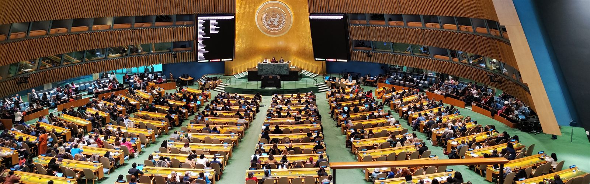
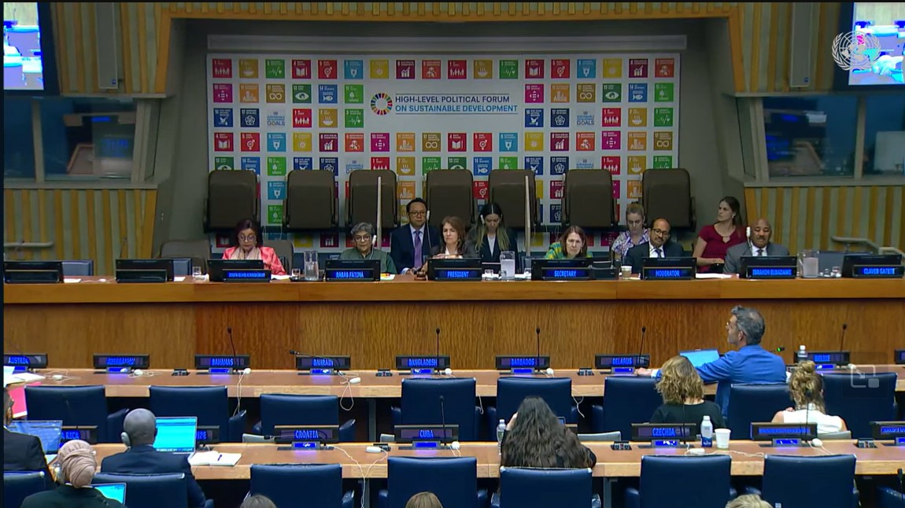
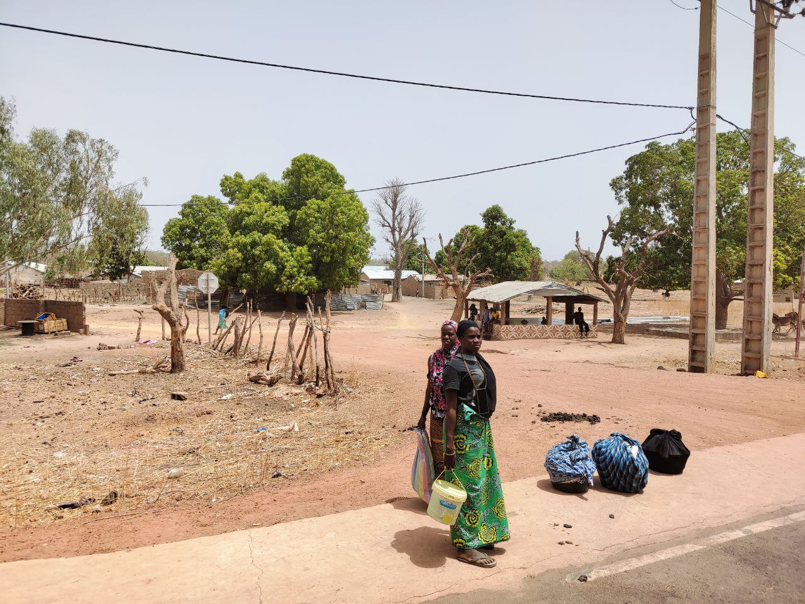
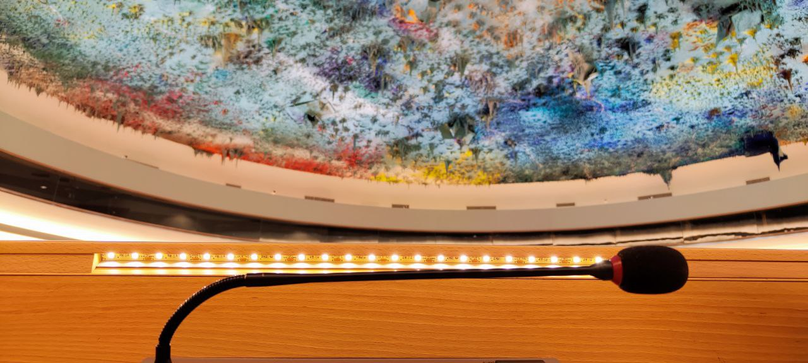
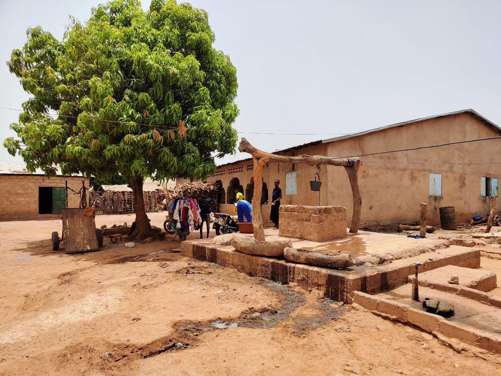

ECOSOC consultative status and DGC association: the two main routes for civil society to engage the United Nations.

Image: United Nations General Assembly, New York.
For a non-governmental organisation, formal accreditation is the door into the United Nations. Two principal routes exist, each opening a different kind of access, and each decided by the UN itself. Here is what they are, what they unlock, and how an organisation is accepted.
What accreditation unlocks
Accreditation gives an organisation a recognised relationship with the United Nations and a practical way to take part in its work. Depending on the route, an accredited organisation can:
Enter UN premises in New York, Geneva, Nairobi and Vienna on accredited grounds passes
Attend meetings and briefings, follow the work of UN bodies in person and online, and at times intervene in the discussion
Access UN documentation, information and events, including the UN Civil Society Conference
With consultative status, submit written and oral statements and organise official side events
Two routes: consultative status and DGC association
Image: New York. Member-state delegations in a UN committee session (2025).
ECOSOC consultative status is the more substantive route. Granted by the UN Economic and Social Council, it lets an organisation take part directly in intergovernmental work: attending and addressing bodies such as the Human Rights Council, the Commission on the Status of Women and the High-Level Political Forum, submitting written and oral statements, and holding official side events. It comes in three categories: General, Special and Roster, and most organisations receive Special status.
Association with the UN Department of Global Communications (DGC) is the communications route. It connects an organisation to the UN’s public information work, with a listing in the UN civil society directory, participation in the weekly Civil Society Briefings at UN Headquarters and online, and grounds passes for events the Department organises in New York. DGC association does not carry the right to speak in intergovernmental meetings, but it is a recognised and valuable link to the UN, and many organisations hold it alongside, or as a step towards, consultative status.
How an organisation is accepted
Image: Nairobi (2024). UN Secretary-General António Guterres arrives at the UN Office at Nairobi. The United Nations actively encourages civil society engagement, but member states decide who gets in.
The United Nations actively encourages civil society participation, but accreditation is not automatic: each application is reviewed and decided by the UN. Consultative status is considered by the Committee on Non-Governmental Organizations, a body of member states that recommends applications to ECOSOC for approval. DGC association is decided by a Civil Society Association Committee within the Department. In both cases a clear, complete and well-prepared application is what counts, and the process can take time.
Eligibility sets the baseline. To be considered for consultative status, an organisation must normally have existed for at least two years, pursue aims that fall within ECOSOC’s areas of work, and run on a transparent, democratically adopted constitution, funded mainly by its members rather than by a government. Applications are filed online through the UN’s NGO Branch, with the organisation’s governing documents, recent financial statements, and a record of its activities attached. Because the Committee meets only twice a year, the timing of a submission shapes both how soon it is first taken up and how long the wait between rounds can be.
For consultative status, the Committee can do one of three things with an application: recommend it, reject it, or defer it by asking questions. There is no limit on how many times it can defer, so an application can move from one session to the next, answering questions and awaiting the next round, for a long time before it is finally decided.
“A rejection makes headlines; endless questions make none, but they are just as effective at blocking ECOSOC accreditation.”
Johannes Butscher, expert in civil society engagement at the UN
It is worth being clear about where those decisions sit. The UN system itself, its Secretariat, its human rights office and successive Secretaries-General, has been a consistent champion of civil society participation. But the UN is its member states, and on this committee it is governments, not the institution, that decide who passes through the door. The deferral power is what makes this possible: because the same questions can be asked again and again, with no limit, a government that would rather not see a particular organisation approved can keep it waiting indefinitely, without ever casting a visible vote against it.
Senior UN human rights officials have described the continued deferral of some applications as amounting, in effect, to a quiet refusal. The pattern shows in the numbers: in its 2026 sessions the Committee approved roughly seven in ten first-time applicants, but only about one in twenty of the applications that had already been deferred. For most organisations the real risk is not an outright “no”; it is the wait.
The roadmap to 2026: accelerating SDG 6 through the UN Water Conference
With 2.2 billion people still lacking safely managed drinking water, the December 2026 UN Water Conference in the UAE offers a clear opportunity to move from dialogue to durable action on water and sanitation.
Water & Sustainable Development
Image: Freshwater ecosystems and biodiversity (2025).
2.2bn
People lacking safely managed drinking water
3.5bn
People without safe sanitation services
50 yrs
Gap between the 1977 and 2023 UN Water Conferences
Dec 2026
Conference dates: 2–4 December, UAE
A pivotal moment for global water governance
The 2026 UN Water Conference, scheduled for 2–4 December 2026 in the United Arab Emirates, is the most significant gathering on freshwater since the landmark UN Water Conference in Mar del Plata in 1977—and only the second since the 2023 New York conference that broke that long silence. Co-hosted by Senegal and the UAE, its central mandate is to accelerate progress on Sustainable Development Goal 6 (SDG 6): ensuring universal access to safe water and sanitation by 2030.
The stakes could not be higher. According to the UN-Water GLAAS 2025 Report, the world is “far off-track” to meet SDG 6. Progress has been uneven, underfunded, and frequently undermined by climate shocks, conflict, and institutional fragmentation. The 2026 conference must therefore do more than convene—it must catalyze concrete commitments, transformative partnerships, and scalable solutions.
The world has convened on water before—but ambition without accountability has left billions behind. 2026 must be different.
Six dialogues, one global agenda
The heart of the conference is a set of six interactive thematic dialogues, each co-chaired by two Member States chosen to reflect geographic and institutional balance. Designed as solution-focused working sessions rather than formal negotiations, the dialogues are expected to generate concrete recommendations, highlight best practices, and identify actionable partnership opportunities.
Water for people
Ghana & Switzerland
Human rights to water and sanitation; equity and access for marginalized communities.
Water for prosperity
China & Spain
The water–energy–food nexus; wastewater reuse; sustainable resource management.
Action-oriented outcomes, not political declarations
Unlike many UN summits that culminate in lengthy negotiated texts, the 2026 conference is deliberately structured to produce a concise summary document rather than a politically brokered declaration. This document—prepared by the co-hosts Senegal and the UAE—will chart a “Roadmap from Senegal to the UAE” and feed directly into the UN High-level Political Forum on Sustainable Development (HLPF).
This format is a deliberate design choice. By side-stepping formal negotiations, the conference can focus its energy on voluntary commitments and pledges, the sharing of replicable innovations, the formation of transformative multi-stakeholder partnerships, and generating measurable, time-bound targets for SDG 6 acceleration. Action replaces negotiation; implementation replaces aspiration.
Image: New York — ECOSOC Chamber (2026).
Building on 2023—and confronting the gap
The 2026 conference directly follows the UN 2023 Water Conference—the first global water summit in nearly 50 years, held in New York in March 2023. That conference produced a voluntary Water Action Agenda attracting thousands of commitments from governments, cities, businesses, and civil society. But follow-through has been inconsistent, and the GLAAS 2025 report is unambiguous: progress is falling far short of what 2030 demands.
The 2026 conference is mandated by three UN General Assembly resolutions: Resolution 77/334, which called for a follow-up to the 2023 conference; Resolution 78/327, which defined its structure and modalities; and Resolution 79/L.101, which established the thematic scope of the dialogues. Together, these frameworks provide both the political mandate and the technical architecture for the event.
The preparatory process
Preparation for the conference began well ahead of December 2026. A high-level international preparatory meeting took place in Dakar, Senegal, in January 2026, bringing together governments, UN agencies, NGOs, technical experts, and civil society organizations to help shape the agenda and pre-negotiate ambitious outcomes. Regional consultations have been conducted in parallel to ensure diverse perspectives—including those of the Global South—are embedded in the conference’s core outputs.
1) Translate dialogue into verifiable action. Every commitment made should include a named responsible party, a measurable indicator, and a reporting deadline.
2) Deepen cross-border and South–South cooperation. Transboundary basin agreements, regional knowledge networks, and South–South technology transfer are underutilized tools that 2026 must strengthen.
3) Unlock finance at the scale the crisis demands. The SDG 6 financing gap runs to hundreds of billions of dollars annually; 2026 must mobilize new public finance commitments and crowd in private capital.
The window to achieve SDG 6 by 2030 is narrow and closing. Governments, intergovernmental organizations, the private sector, and civil society all have a role to play—and the 2026 UN Water Conference is the most important shared platform they have. The world is watching.
Defending Human Rights in Practice: Geneva’s UPR and New York’s VNR
The Universal Periodic Review, based in Geneva, and Voluntary National Reviews, based in New York, offer complementary but very different paths to accountability. With 36 countries presenting in 2026, here is what advocates need to know.

Image: New York — HLPF 2024, VNR presentation and questions (2024).
Human Rights & Sustainable Development
Voluntary National Reviews (VNR) — New York
36
Countries presenting VNRs at the High-Level Political Forum in 2026
No fixed cycle
Countries present when they choose. Some do so annually; most every 2 to 4 years.
Universal Periodic Review (UPR) — Geneva
42
Countries reviewed by the UPR in 2026 across three Geneva sessions
~4.5 yrs
Time between each country's review, on a rolling cycle covering all 193 UN members
The United Nations runs two major processes for holding governments accountable. One is anchored in New York, the other in Geneva. In New York, the High-Level Political Forum on Sustainable Development is the UN's main annual forum for reviewing progress on the Sustainable Development Goals. This is where countries present what are known as Voluntary National Reviews (VNRs): self-reported assessments of how they are doing against the 2030 Agenda. In Geneva, the UN Human Rights Council runs the Universal Periodic Review (UPR): a systematic, peer-led examination of every country's human rights record.
Both processes ask governments to account for their performance before the international community. But they operate in different institutions, on different timelines, with different levels of political scrutiny. Understanding both, and the space between them, is essential for advocates working to connect sustainable development commitments with human rights realities on the ground.
The New York mechanism: VNRs at the High-Level Political Forum
Each July in New York, governments gather at the High-Level Political Forum on Sustainable Development, the UN's central annual platform for reviewing the 17 Sustainable Development Goals (SDGs). A central feature of this gathering is the Voluntary National Review (VNR): a country's own self-reported assessment of its SDG progress. VNRs are exactly what their name suggests: voluntary. Countries choose whether to present, choose how to frame their findings, and choose which challenges to highlight. There is no external examiner, no peer questioning of the evidence base, and no mechanism for formal follow-up if commitments go unmet.
That said, VNRs are far from meaningless. The process of preparing one often catalyses genuine national dialogue, draws in civil society, and produces a public record that advocates can hold governments to. Over 400 VNR reports have been presented since the Forum was established. Some countries have done so three or four times.
VNR vs. UPR at a glance
VNR — Voluntary National Review
Where
New York — High-Level Political Forum
Under
ECOSOC / UN DESA
Frequency
Country chooses when
Focus
SDG progress — all 17 goals
Format
Self-written national report
Scrutiny
No formal peer examination
Binding?
No — fully voluntary
Scope
Countries that opt in
UPR — Universal Periodic Review
Where
Geneva — Human Rights Council
Under
OHCHR / Human Rights Council
Frequency
Every ~4.5 years per country
Focus
Human rights obligations
Format
State report + NGO inputs + UN data
Scrutiny
Peer states in Working Group
Binding?
No — but politically significant
Scope
All 193 UN Member States
Who is presenting a VNR at the High-Level Political Forum in 2026?
Thirty-six countries will present Voluntary National Reviews at the High-Level Political Forum in 2026. The group spans all regions, from small island states to G20 economies, reflecting the universal ambition of the 2030 Agenda.
AlbaniaAlgeriaBahrainBrazilBurkina FasoBurundiCabo VerdeCameroonDR CongoEgyptEstoniaGabonGuineaGuinea-BissauItalyJamaicaJordanKiribatiLiberiaMalawiMarshall IslandsMozambiqueNorwayRep. of MoldovaRwandaSaint Kitts and NevisSaudi ArabiaSenegalSomaliaSwitzerlandTogoTongaTunisiaUnited Arab EmiratesUnited Rep. of TanzaniaUruguay
Blue: Africa / Asia-Pacific / Middle East Orange: Europe / Americas Green: Small Island Developing States

Image: The Gambia — field visit, 2023. Women waiting for a bus on the roadside, Eastern River Region.
The Geneva mechanism: the Universal Periodic Review
The Universal Periodic Review is the Human Rights Council's flagship accountability mechanism. It is genuinely universal. Every one of the 193 UN Member States is reviewed on its human rights record, regardless of how powerful or how politically sensitive. The UPR takes place in Geneva, under the auspices of the Human Rights Council (HRC), and is managed by the Office of the High Commissioner for Human Rights (OHCHR).
Unlike a VNR, a country under UPR review cannot simply opt out or control the narrative. Three streams of information feed into each review: the government's own national report, a compilation of relevant UN data prepared by OHCHR, and a summary of inputs from civil society and national human rights institutions. The review itself is a live, interactive dialogue in a Working Group of the full HRC membership.
How the UPR process works
① Prepare
~6 months before review
Government submits its national report. NGOs and NHRIs submit stakeholder inputs to OHCHR. The UN system compiles its own data summary.
② Review
Working Group session, Geneva
A 3.5-hour interactive dialogue in the HRC. Any member state may pose questions or make recommendations. The reviewed state responds in real time and may accept, note, or reject each recommendation.
③ Follow up
Between cycles
Recommendations are published and tracked. States are encouraged to submit mid-term implementation reports. NGOs can monitor progress and use unimplemented recommendations in future advocacy.
The UPR is deliberately decentralised. Preparation happens at national level, review happens in Geneva, and implementation happens back at home. Civil society can engage meaningfully at every stage. No two country reviews follow exactly the same political dynamics.
UPR sessions in 2026
Three two-week sessions take place each year, with 14 countries reviewed per session, totalling 42 per year. The 2026 schedule:
51st Session
19–30 January 2026
Austria, Australia, Federated States of Micronesia, Georgia, Lebanon, Mauritania, Nauru, Nepal, Oman, Rwanda, Saint Kitts and Nevis, Saint Lucia, São Tomé and Príncipe
Haiti, Iceland, Lithuania, Myanmar, Republic of Moldova, South Sudan, Sudan, Syrian Arab Republic, Timor-Leste, Togo, Uganda, Ukraine, United Republic of Tanzania, Zimbabwe

Image: Geneva — UN Human Rights Council, Forum on Minority Issues (2023).
Are recommendations legally binding?
Neither the VNR nor the UPR generates legally binding obligations in itself. This is a common source of frustration, and a common misunderstanding.
VNR commitments are purely political. A government presents its SDG progress voluntarily, and there is no enforcement mechanism if it misrepresents data or abandons targets between reviews. The persuasive force of a VNR depends entirely on domestic accountability: civil society scrutiny, parliamentary oversight, and media attention.
UPR recommendations occupy a more complex space. They are not legally binding as a direct result of the UPR process. However, many recommendations relate to obligations that are legally binding under international human rights treaties the state has already ratified: the ICCPR, CEDAW, CRC, and others. When a state accepts a UPR recommendation to, say, amend a discriminatory law, it is accepting a political commitment that tracks an existing treaty obligation. Acceptance creates a public record; rejection or non-implementation creates political exposure.
In practice, the UPR's power is political, not legal. But politics, and especially the peer pressure of 193 states watching each other, can move governments in ways that treaty bodies alone cannot.

Image: The Gambia — field visit, 2023. Women at a public well in Koina.
What this means for advocates
For NGOs and civil society organisations, the VNR and UPR are not competing mechanisms. They are complementary tools that speak to different audiences, at different moments in the policy cycle, in different institutional languages.
A VNR presentation in New York is a moment of political visibility: a government is publicly committing to SDG targets in front of the international community. Stakeholder reports submitted alongside VNRs give civil society a seat at the table. The parallel process of civil society shadow reports, side events, and direct engagement with delegations can amplify community voices that rarely reach New York.
The UPR, by contrast, provides the formal architecture to raise specific human rights violations, patterns of discrimination, or failures of rule of law that may not surface in a government's own SDG reporting. Organisations with ECOSOC consultative status, and even those without it, can submit written stakeholder reports directly to OHCHR for inclusion in the review. Field evidence from community visits, like those conducted in The Gambia, translates directly into the kind of concrete, localised documentation that makes UPR submissions credible and impactful.
Together, the two mechanisms create a fuller picture: the VNR shows ambition; the UPR tests accountability.
A strategic roadmap for NGOs and parliamentarians engaging with the United Nations
Image: New York — United Nations Headquarters (2025).
Successfully engaging with the United Nations (UN)
requires a deep understanding of its complex procedures, from the
Economic and Social Council (ECOSOC)
to the
Human Rights Council (HRC).
This guide provides a strategic roadmap for parliamentarians and non-governmental organizations
(NGOs) seeking to maximize their impact on global policy.
ECOSOC is a principal UN organ responsible for coordinating economic, social, and environmental
work. It functions as the primary bridge between the UN and civil society and plays a central
role in the follow-up and review of the
2030 Agenda for Sustainable Development.
ECOSOC is the only formal entry point for non-state actors to establish an official relationship
with the UN. NGOs may apply for consultative status, which is granted upon recommendation of the
Committee on Non-Governmental Organizations
.
There are three categories of status: General, Special, and Roster—each determining the scope
of participation and engagement.
Human rights advocacy takes place primarily through the
Office of the High Commissioner for Human Rights (OHCHR)
and the UN Human Rights Council in Geneva. For those working on Freedom of Religion or Belief
(FoRB), engagement with UN Special Procedures is often the most effective route.
Image: United Nations — Civil society engagement (2025).
Advocacy tools include confidential Urgent Appeals—which remain non-public
until a communication is sent to the concerned state—and the
Universal Periodic Review (UPR)
,
a four-yearly review of each country’s human rights record.
Delivering an oral statement at the Human Rights Council is a high-visibility but tightly
regulated advocacy opportunity. Only ECOSOC-accredited organizations may register to speak,
time limits are strictly enforced, and statements must directly relate to the relevant agenda
item to avoid procedural interruptions.
Practical guidance on preparing effective interventions is provided by institutions such as
the
ISHR Academy,
which also offers support on navigating accreditation and access to UN premises.
Understanding the UN is like mastering a complex clockwork mechanism—every component must move
in sync to ensure advocacy efforts reach decision-makers and result in meaningful change.
What Drives Change?
Bridging knowledge, experience, and strategy for real-world impact
Image: Geneva — Human Rights Council, Forum on Minority Issues (2024).
Facts alone are rarely enough. While research and data are the foundation of solutions-based approaches, it depends to an equal degree how effectively they are communicated. Bridging the gap between community perspectives, scientific evidence, and actionable solutions is essential to translate knowledge into frameworks that work locally, regionally, and globally.
To inspire meaningful action, innovative ways of sharing knowledge are needed. While statistics and studies are vital, creative approaches—such as exhibitions, cultural performances, and interactive dialogues with decision-makers—can amplify understanding and make solutions tangible and memorable.
Experience and guidance help NGOs and civil society organizations navigate these avenues, while maintaining connections with UN agencies, permanent missions, and informal networks. By combining credibility, strategy, and communication, organizations can generate the political momentum necessary to turn ideas into real-world impact.
Partnerships with governments are often overlooked yet essential. When governments are democratic and open, collaboration enables solutions to be implemented effectively. Across the United Nations and international human rights spaces, respect for human rights and environmental protection works hand in hand with legitimacy and influence, allowing evidence-based solutions to reach the decision-makers who can make change happen.
From Local Solutions to Global Impact
Why community-driven approaches must reach international decision-making spaces
Image: The Gambia — Field visit (2023).
Non-governmental organizations (NGOs) are essential drivers of localized solutions
that address some of the world’s most pressing challenges. By designing specialized
measures for the most vulnerable communities—through systems of representation,
economic empowerment, or cultural and political participation—NGOs create models
that can often be adapted and applied across diverse global contexts.
Yet, many of these solutions remain local and invisible to the wider international
community. To maximize their impact, they must be brought to global arenas, including
the United Nations, regional human rights forums, and sustainable development
mechanisms, where they can be shared, amplified, and adapted. Lessons from the Sahel
region, for example, may soon provide solutions for areas struggling with
climate-related agricultural challenges.
As global crises grow more complex, local and regional organizations that focus on
rights-based advocacy and practical problem-solving must collaborate and bring their
expertise to international platforms. These spaces allow innovative, field-tested
solutions to scale, turning localized approaches into replicable programs that
address human rights and environmental challenges worldwide.
By combining local knowledge, experience, and wisdom with strategic international
engagement, NGOs ensure that practical solutions reach the decision-makers and global
audiences who can transform them into meaningful impact. Staying focused on this
mission, even amidst distractions and competing agendas, is key to achieving
long-term change.